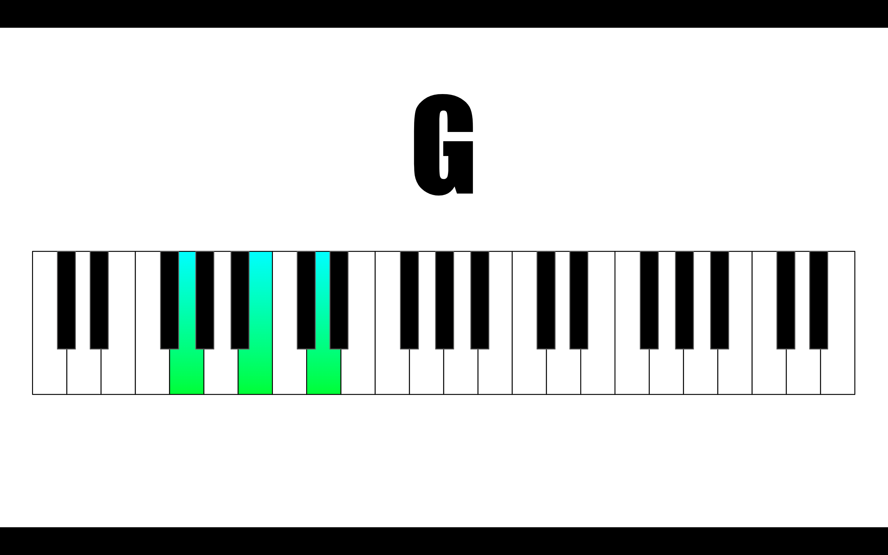

G major
G · B · D
- What it is The G major chord is a triad — three notes played together: G · B · D. On the keyboard above, those three notes are highlighted.
- Theory Like every major chord, it's built from a root, a major third, and a perfect fifth above the root.
- Fingering Left hand: little finger, middle finger, thumb. Right hand: thumb, middle finger, little finger.